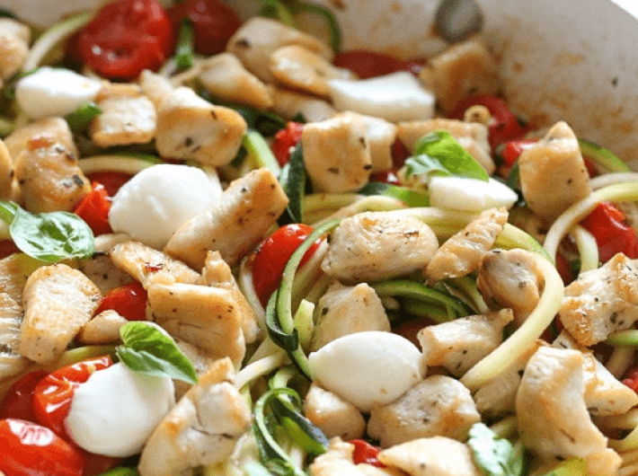

Zucchini Caprese mit Huhn
(20 Min, 2 Port., F: 17 g, K: 10 g, E: 34 g)

Zutaten
- 300 g Hühnerbrust, 1/4 TL Oregano, 1 TL Olivenöl, 3 Knoblauchzehen, 300 g Cocktail-Tomaten, 1 TL rote Chili-Flocken, 1 TL Basilikum, 1 Zucchini, 70 g Mozzarella-Kugeln, Salz & Pfeffer
Vorbereitung
- Mit einem Spiralschneider Zucchini in Nudelform bringen. Knoblauch fein hacken. Tomaten halbieren. Mozzarella-Kugeln halbieren.
- Hühnerbrust abwaschen und in mundgerechte Stücke schneiden. Mit Salz, Pfeffer und Oregano würzen.
Braten
- In einer Pfanne die Hälfte des Olivenöls erhitzen und Hühnerbrust in die Pfanne geben. Wenn die Hühnerbrust goldbraun und gar ist, das Hühnchen aus der Pfanne entfernen.
- Restliches Öl in die Pfanne geben und Knoblauch anbraten.
- Tomaten und Chiliflocken dazu geben. Die Pfanne abdecken und bei niedriger Hitze 5 bis 10 Minuten köcheln lassen, damit die Tomaten weich werden.
- Deckel abnehmen und Hitze erhöhen. Zucchini, Basilikum und Hühnerbrust dazugeben.
- Mit Mozzarella garnieren und direkt servieren.
Originalrezept unter: Skinnytaste.com